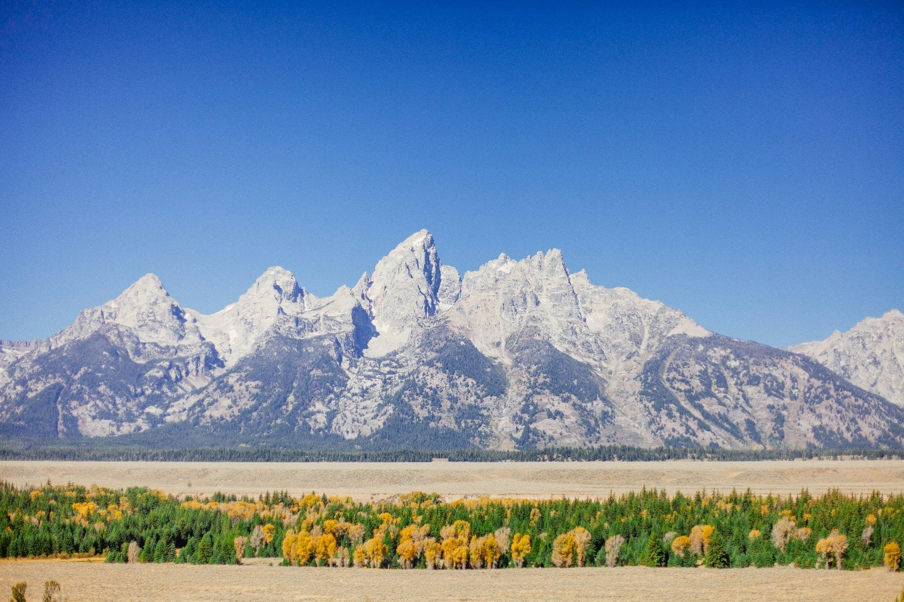
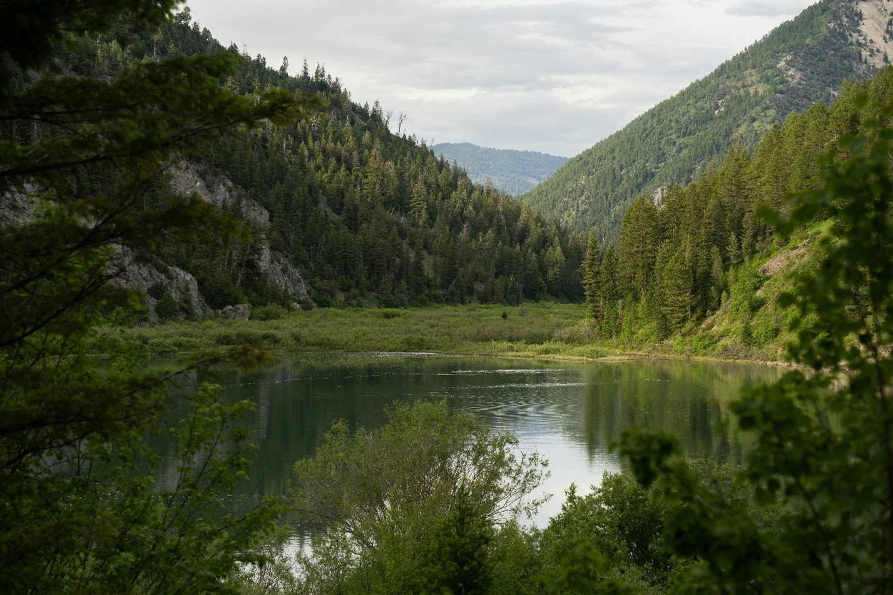
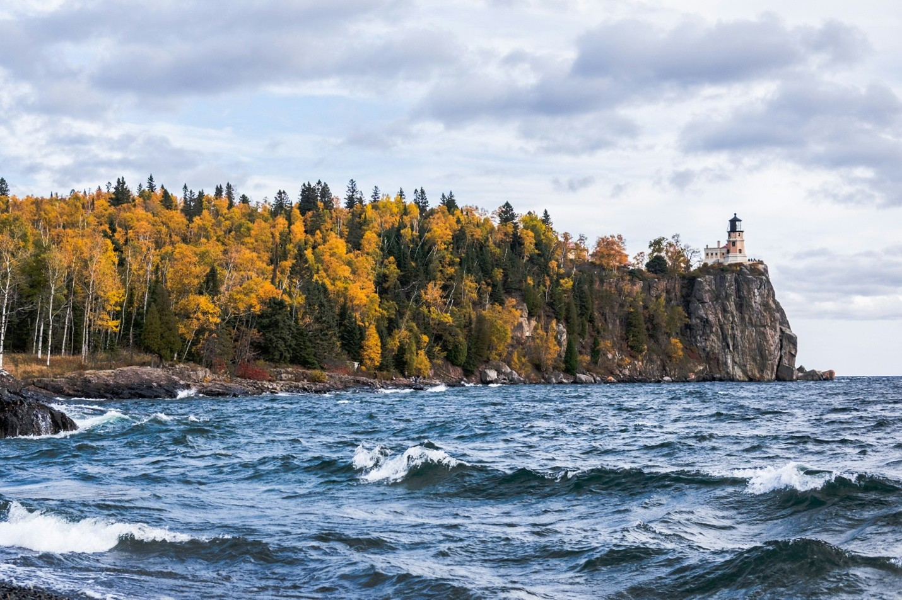

History in the Landscape
Exploring parks, monuments, and natural landscapes that preserve important stories.
About the Site.
This website is designed to document some of my travels and experiences to different significant locations around Idaho and Minnesota. While other travel sites focus on the journey or the destination, this one does not. This site focuses on the geological and historical significance of each site's creation, preservation, and lasting impact. By getting out of the classroom and into nature, we can observe history in a meaningful way.
Why?
I have always enjoyed history, both human and geology, along with the outdoors. Combining these two interests only increases my interest in both. Being able to learn about how nature is formed into what we see today and how that effected humans both past and present is a privilege of the modern world.
Featured Locations

Idaho
Idaho contains several unique geological and historical sites, including volcanic landscapes, fossil beds, and ancient Native American rock art.

Minnesota
Minnesota also contains remarkable landscapes shaped by glaciers and ancient geology, as well as locations connected to exploration and settlement.